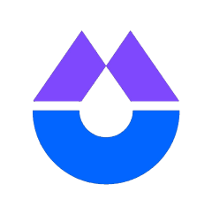
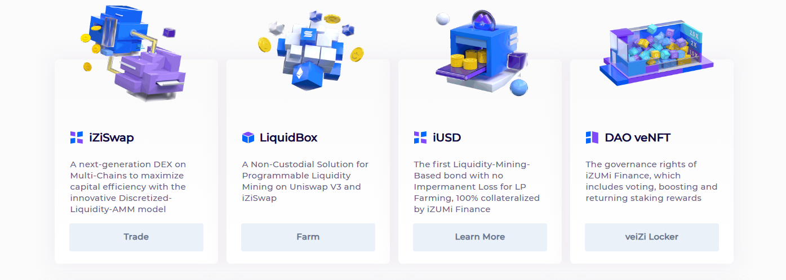

.png)
①
Pick your action (trade or LP)
Decide if you’re using iziSwap to swap tokens (execution-focused) or to provide liquidity (strategy-focused). The best route and settings differ.

This is a practical, execution-first guide to iziSwap in 2026: how concentrated liquidity works, what “real fees” look like for traders, how to swap step-by-step, how to provide liquidity using ranges, what drives LP performance (and impermanent loss), and how to avoid the common mistakes that create bad fills, stuck transactions, or unusable positions.
Decide if you’re using iziSwap to swap tokens (execution-focused) or to provide liquidity (strategy-focused). The best route and settings differ.
For trading: deeper liquidity usually beats “low fees”. For LPs: fee tier and volatility determine whether ranges will earn or decay.
For meaningful size, run a small test swap or small LP position to validate price impact, gas, and the UI flow before scaling.
Traders: record fill price and slippage. LPs: track fee income, range utilization, and impermanent loss. Real results beat headline claims.
iziSwap is a DEX design focused on concentrated liquidity, enabling liquidity providers to allocate capital within chosen price ranges. For traders, this can mean better execution when liquidity is properly placed. For LPs, it can mean higher fee efficiency—if range management is done correctly.
Active traders who care about execution and LPs who can manage ranges and rebalancing discipline.
Liquidity can be fragmented by range; if your size hits thin depth, slippage jumps fast.

When people search iziSwap fees, they usually mean: “How much will this trade really cost me?” Real cost is a combination of:
| Cost line | Where it appears | How to reduce it |
|---|---|---|
| Pool fee | Swap quote / pool tier | Choose deeper pools; compare tiers |
| Price impact | Slippage / execution difference | Split trades; avoid thin ranges; trade during calmer periods |
| Gas | Approval + swap | Batch actions when possible; trade when network is cheaper |
| MEV / sandwich risk | Public mempool swaps | Keep slippage tight; split orders; use safer routing if available |
Concentrated liquidity means LP capital is placed within a price range. If price moves outside your range, your position becomes less effective (and fee generation can drop).
LP outcomes are driven by: volatility, fee income, range width, and how often you rebalance. Searches around iziSwap liquidity ranges and iziSwap LP strategy usually boil down to: “How do I avoid getting wrecked out-of-range?”
| Range style | Pros | Cons | Best for |
|---|---|---|---|
| Narrow range | Higher fee efficiency in-range | Needs active rebalancing; higher out-of-range risk | Active LPs |
| Wide range | More time in-range | Lower fee efficiency | Low-maintenance LPs |
| Multi-range / ladder | Balances coverage and efficiency | More complex management | Experienced LPs |
Users often search iZi token to understand utility, emissions, and incentives. Without overcomplicating: treat iZi as an incentive and governance-style asset whose value can depend on protocol usage and reward design.
For serious trading or LP, you need visibility: volume, fee revenue, liquidity distribution, and wallet performance. Use dashboards to track what matters:
Below are curated references related to iziSwap fees, execution, liquidity ranges, and analytics dashboards.
iziSwap is a DEX with concentrated liquidity mechanics, where LPs allocate liquidity in price ranges. Traders benefit when liquidity is well distributed and routes are deep.
Your real cost is pool fee tier + price impact + gas. If the route includes multiple hops, additional fees and slippage can apply.
Verify token contracts, keep slippage tight in deep pools, run a small test trade, and avoid unlimited approvals on high-value wallets.
LPs provide liquidity within selected price ranges. In-range positions earn fees; out-of-range positions may stop earning and require rebalancing decisions.
It can be, but profitability depends on volume, volatility, fee tier, range width, and rebalancing costs. Track net outcome: fees − IL − gas − rebalances.
Watch emissions/incentives, utility design, and whether rewards are backed by real usage. Avoid assuming incentive APR is sustainable yield.
Common reasons: slippage too tight, price moved, liquidity was insufficient across the range, or gas was too low. Retry with a fresh quote.
Track fees earned, time in-range, price movement, and IL. Compare your LP outcome to simply holding the assets over the same period.
Bookmark URLs, verify token contracts, use a dedicated interaction wallet, limit approvals, test small first, and revoke old allowances periodically.